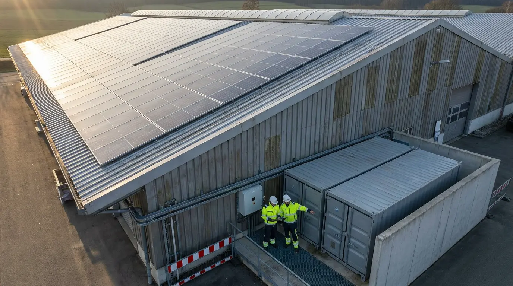

Eigenverbrauch erhöhen
Selbst erzeugten Strom nutzen, wenn Ihre Produktion ihn braucht — auch außerhalb der Sonnenstunden.
Energiesysteme für den Mittelstand
Machen Sie Ihren Strom berechenbarer. Mit einem Speichersystem, das Verbrauch, Erzeugung und Netzbezug intelligent zusammenführt.
Wo stehen Sie heute?
Nicht mehr Strom.
Mehr Kontrolle.
Ihre bestehende PV-Anlage erzeugt bereits Energie. Wir sorgen dafür, dass mehr davon dann arbeitet, wenn Ihr Betrieb sie wirklich braucht.
Das Prinzip verstehen ↓Ein typischer Betriebstag
Während Ihr Betrieb arbeitet, verschiebt der Speicher Energie dorthin, wo sie den größten wirtschaftlichen Effekt hat.
Der Solarüberschuss lädt den Speicher. Energie, die heute Abend nicht teuer aus dem Netz bezogen werden muss.
Was sich verändert
Selbst erzeugten Strom nutzen, wenn Ihre Produktion ihn braucht — auch außerhalb der Sonnenstunden.
Kurzzeitige Verbrauchsspitzen gezielt aus dem Speicher decken und Leistungspreise reduzieren.
Energieflüsse transparent machen und Beschaffung langfristig wirtschaftlicher steuern.
Erste Einschätzung in 90 Sekunden
Keine Produktkonfiguration. Eine erste wirtschaftliche Einordnung auf Basis Ihrer Situation.
Besonders interessant ist die Kombination aus höherem Eigenverbrauch und gezielter Laststeuerung.
15 Minuten mit einem GEBA-Energieberater: Verbrauchsdaten einordnen, Hebel priorisieren, Vorgehen klären.
Technik ist nur so gut
wie die Menschen dahinter.

BestandsaufnahmeLastgang, Erzeugung und betriebliche Ziele werden gemeinsam bewertet.
Wirtschaftliche AuslegungDimensionierung folgt Ihrem Nutzen — nicht der maximalen Batteriegröße.
Umsetzung & BetreuungPlanung, Installation und Einbindung aus einer koordinierten Hand.

Referenz Hotel Waldhaus
Bei anspruchsvollen Energieprojekten zählt das Zusammenspiel: Bestand verstehen, Systeme sinnvoll verbinden und den Betrieb langfristig im Blick behalten.
Kein Verkaufsgespräch.
Eine fundierte erste Einordnung.
In einem kurzen Erstgespräch klären wir, ob ein Gewerbespeicher zu Ihrem Betrieb passt und welche Daten für eine belastbare Bewertung sinnvoll sind.

Kurz kennenlernenAusgangssituation und Ziele
Daten einordnenVerbrauch und Erzeugung
Potenzial bewertenKonkretes weiteres Vorgehen
Unverbindlich · persönlich · auf Augenhöhe